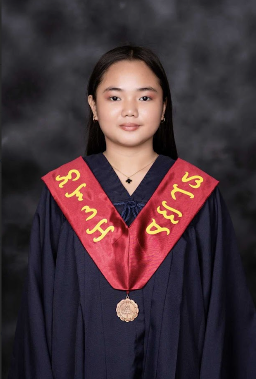

COMPUTER SCIENCE STUDENT
Designing Meaningful Digital Experiences Through Code & Creativity.
Hello, I'm Hanna Loren. I enjoy creating responsive websites, thoughtful interfaces, and meaningful digital experiences that combine creativity with functionality.

Who is Hanna?
My journey into Computer Science wasn't something I had planned from the beginning. Before choosing this path, I seriously considered becoming a teacher or pursuing Civil Engineering. Both careers appealed to me in different ways, and for a long time, I thought one of them would become my future. However, everything changed when I was in junior high school and was introduced to programming as part of one of my subjects.
I remember being genuinely fascinated by how a few lines of code could create something functional. What started as simple curiosity quickly became excitement. Instead of seeing programming as just another school requirement, I found myself wanting to understand how everything worked behind the screen. When the time came to choose a college program, I listened to that feeling. Although teaching and Civil Engineering were still options, something in me knew that Computer Science was where I truly belonged.
Today, I'm pursuing a Bachelor of Science in Computer Science with the goal of becoming a developer who creates meaningful solutions for real people. My motivation is simple and honest. I want to build technology that improves people's lives and solves real-world problems while building a secure future for myself and my family.
The things that inspire me outside technology.
Technologies and Tools I Enjoy Working With.
Learning, Building, and Growing Every Year.
A Selection of Projects I've Enjoyed Building.
Let's build something meaningful together.
Whether you have an internship opportunity, collaboration, or simply want to connect, I'd love to hear from you.